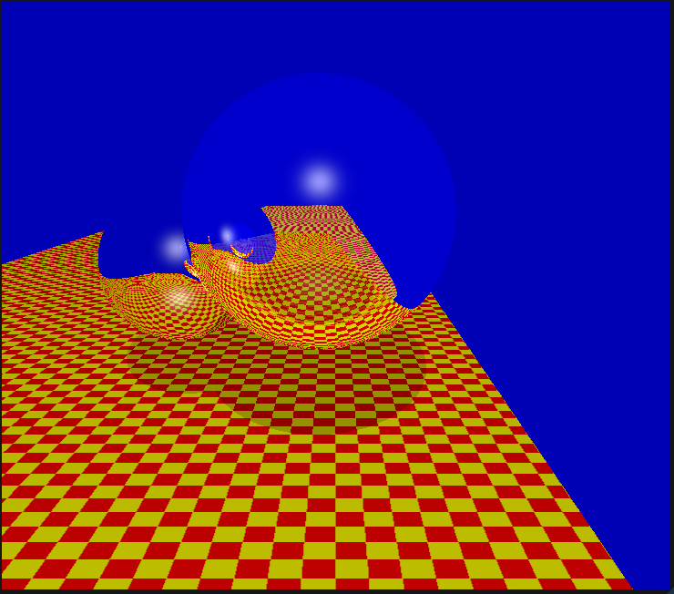

This project is started as a part of Global Illumination course.
I have implemented a recursive ray tracer with Phong blinn support, added support for BRDF,Reflection , Refraction
The raytracer is physically based renderer with Path Tracing and Photon Mapping.
Turner Whitted rendered spheres.

Model loaded from Obj - stanford bunny loaded.
A list of project features can be found in the repository linked above.